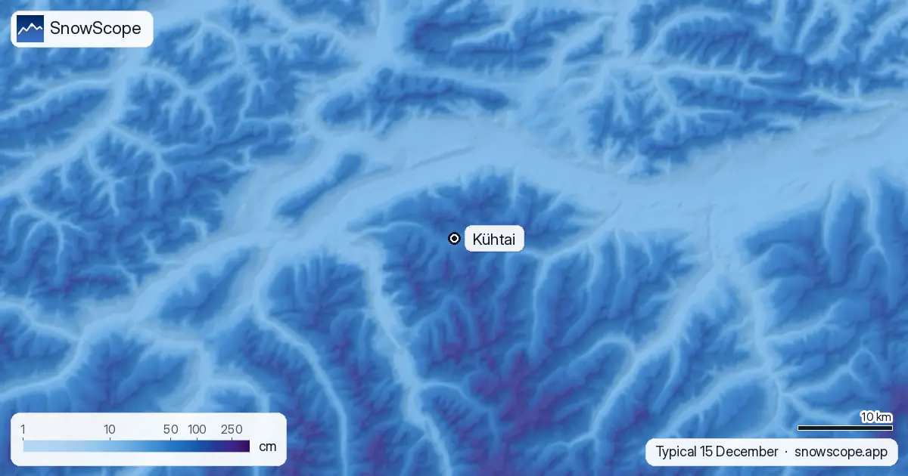

Kühtai in December: Austria's high budget week near Innsbruck
Kühtai sits higher than the top lifts of many Austrian resorts, and that height pays off in December. The base at 1939 m holds snow that lower valleys lose: on a typical 15 December the SnowScope record of 46 winters shows 60 cm there, with 72 cm at mid-mountain and 112 cm at the top. The low season runs until 18 December with a 6-day pass at EUR 269.
See the live snow forecast for Kühtai in the SnowScope appSnow depth, powder alerts and the 3D map, free.
Height as insurance
Snow depth rises as you climb. Kühtai demonstrates this clearly across its 569 m vertical. At the base (1939 m) a typical mid-December has 60 cm, at mid-mountain (2223 m) 72 cm, and at the top (2507 m) 112 cm. This spread gives you options when lower runs thin out.
Even in weak years, the mountain holds snow. In 1 winter out of 10, 15 December arrives with only 27 cm at the base. Yet in 46 winters of records, the base has never been bare on that date. The mapped area covers 34 km of runs and 13 lifts, and every slope is at altitude.


When to book before Christmas
Early December is the gamble. At the base, 70 % of winters have 30 cm or more in the first week of December, rising to 85 % by 8-14 December. By the third week (15-21 December) it reaches 93 %, and 96 % by the week before New Year. Mid-mountain is safer earlier: already 89 % in week one.
The usual first day to find 30 cm at the base is 12 November. For a December booking, wait until mid-month to tip the odds strongly in your favour, or accept the thin-snow risk if you book the week of 27 November to 4 December at the low-season price.
What the last 15 winters tell us
Kühtai has warmed less than lower valleys in the Alps. The December average at the base fell slightly from 53 cm across the first 15 winters to 49 cm in the last 15 winters. At the top, it held steady around 103–104 cm. The Christmas week picture changed more: 100 % of the first 15 winters had 30 cm at the base by Christmas week, but only 87 % of the last 15.
Last winter (2025-26) was thin: 36 cm at the base on 15 December. Here, thin is still skiable. The trend suggests Kühtai remains more reliable than lower resorts, but no December is guaranteed.
The low-season bill
Book by 18 December to lock in the low-season price. A day pass costs EUR 50.50 and a 6-day pass EUR 269. From 19 December, prices jump to EUR 66.50 per day and EUR 353 for 6 days. The savings on a week-long pass are EUR 84.
From 4 December onwards, any pass of 2 days or longer also works across the Kühtai-Hochoetz region, adding 90+ km of linked slopes at no extra cost. That matters if wind closes Kühtai's higher, more open terrain.
Kühtai versus Stubaier Gletscher
The Stubaier Gletscher, 20 minutes away near Innsbruck, sits higher at the top (3208 m against 2507 m) and holds more snow there: 169 cm on a typical 15 December. Its base is lower (1692 m) and thinner, with only 40 cm and snow on 72 % of mid-December weeks. Kühtai's 60 cm at the base is thicker.
A main-season day at Stubaier Gletscher costs EUR 75.50 and a 6-day pass EUR 355. For a December week before 19 December, Kühtai's EUR 269 for 6 days is EUR 86 cheaper. Choose Stubaier if the glacier's extra height and depth appeal and you do not mind paying more. Choose Kühtai for better base snow and a lower bill.
What to pack and know
Kühtai is a high pass village on a mountain road. Carry winter tyres and snow chains; the road closes for avalanche control after heavy snow. Build a buffer day into your plans if you have a fixed checkout date.
The mapped ski area is small and can be skied thoroughly in two or three days by an intermediate skier. Use the Hochoetz link from 4 December onwards to explore new terrain without paying extra.
Tips for skiers
- Book your 6-day pass by 18 December to pay EUR 269 instead of EUR 353 from 19 December onwards.
- Aim for the week of 15-21 December or later: 93 % of winters had 30 cm at the base by then, against 85 % in the second week.
- Head to higher slopes when wind picks up; the linked Hochoetz area (available from 4 December) offers shelter on its gentler terrain.
- Carry winter tyres and chains; the road to Kühtai closes for avalanche work after storms. Check avalanche.report before leaving the piste.
- In a thin year, ski mid-mountain and the top first—the base may need a fresh snow day to cover rocks.
About these numbers
Resort snow depths are the deepest snow on the resort's upper slopes on the date shown; they are estimates for an area, not a measurement at one point. Forecasts can change. Always read the official avalanche bulletin before going off-piste.
Official avalanche bulletins: Avalanche.report – Euregio Tyrol
Cite this report
For research, teaching or the press: the numbers and charts are free to reuse under CC BY 4.0 with this citation.
SnowScope (2026), Kühtai in December: Austria's high budget week near Innsbruck, https://snowscope.app/blog/en/2026/11/kuehtai-december-ski-trip-highest-village-innsbruck-budget.html, accessed 2026-11-14
SnowScope (Atlas Labs). (2026, November 14). Kühtai in December: Austria's high budget week near Innsbruck. SnowScope snow reports. https://snowscope.app/blog/en/2026/11/kuehtai-december-ski-trip-highest-village-innsbruck-budget.html
BibTeX
@misc{snowscope2026kuehtaidecemberskitriphi,
author = {{SnowScope (Atlas Labs)}},
title = {Kühtai in December: Austria's high budget week near Innsbruck},
year = {2026},
month = nov,
howpublished = {\url{https://snowscope.app/blog/en/2026/11/kuehtai-december-ski-trip-highest-village-innsbruck-budget.html}},
note = {Published 2026-11-14 13:29 UTC; accessed 2026-11-14}
}· CC BY 4.0 · Methods, data and tools →
Kühtai: snow and temperature by height, this winter vs last (tools) →
Follow Kühtai
Free: a message when fresh snow is coming, and the forecast every morning.
More snow reports

Our 46-winter Alps record at 108 points from 667 to 3,872 m: snow days down at all of them, clearly at 81 %. What changed at each height, and why.

Austria before Christmas: Galtür EUR 258 and Kühtai EUR 269 for 6 days with 30 cm in over 90 % of winters; glaciers cost more, small hills are a gamble.

How reliable is each?